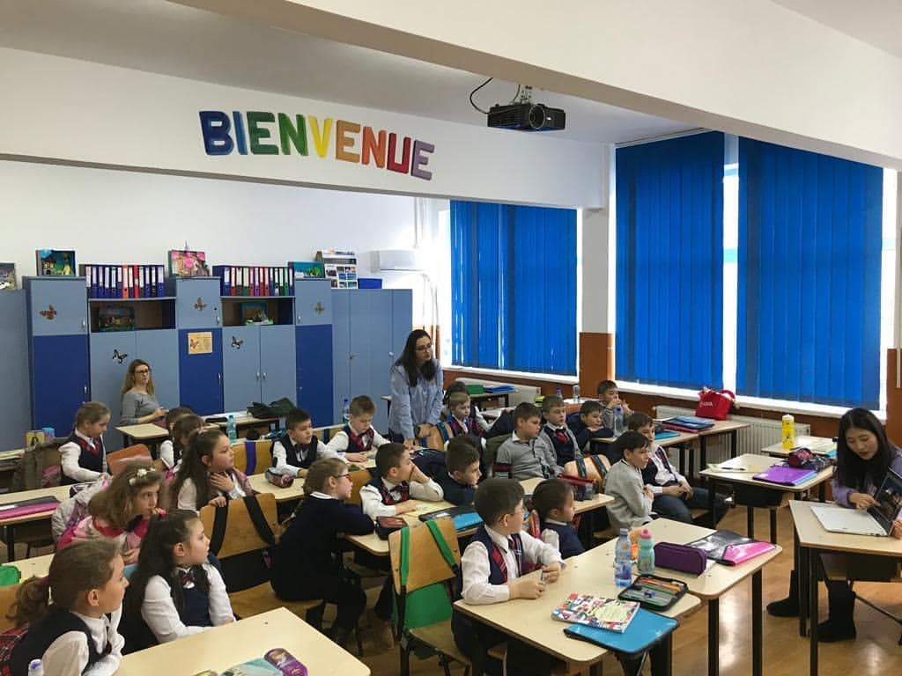
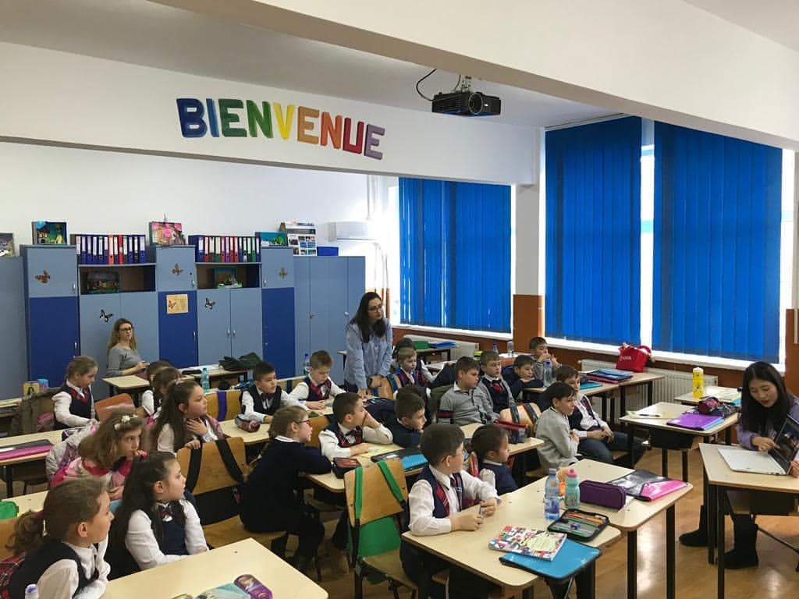
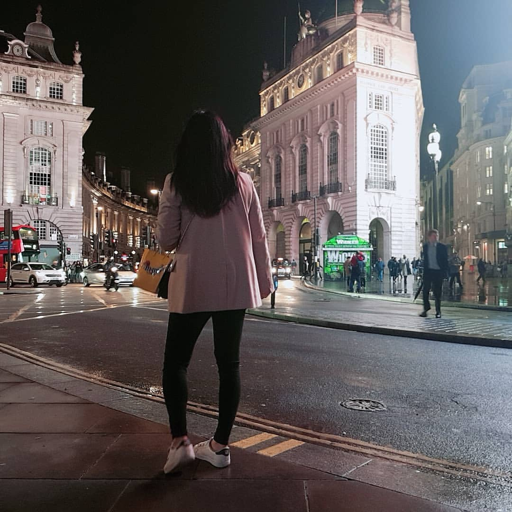

| 년도 | 국가 | 지도 |
|---|---|---|
| 2015년 | 일본/도쿄 | 도쿄 |
| 2016년 | 일본/오사카 | 오사카 |
| 2018년 | 필리핀/세부,보홀 | 보홀 |
| 2019년 | 루마니아/갈라치 | 갈라치 |
| 2019년 | 헝가리/부다페스트 | 부다페스트 |
| 2019년 | 프랑스/파리 | 파리 |
| 2019년 | 영국/런던 | 런던 |
여행스토리
- 2015 일본여행 TOKYO
- 2016 일본여행 OSAKA
- 2018 필리핀여행 BOHOL/CEBU
- 2019 유럽여행 ROMANIA
- 2019 유럽여행 HUNGARY
- 2019 유럽여행 FRANCE
- 2019 유럽여행 UK
가족들과 함께한 첫 해외여행! 비행기 타러 갈 때 부터 정말정말 설렜었다,,
아빠는 해외에 계셔서 함께 여행가지 못했지만, 막내이모랑 넷이서 여행다녔다! 정말 예뻤고, 추웠고, 신났다.
여행다니면서 느낀건 일본사람들은 정말 친절하다.. 지나가다가 모르고 쳤었는데 먼저 사과하시길래 너무 놀랬다.
한가지 단점이라고 한다면, 영어 발음이 정말 안좋다.. 알아듣기 너무 힘들었고, 소통하는 것도 힘들었었다!

지하철타고 가면서 다리를 지나갔는데, 정말 너무 예뻐서 다시 1번 더 탔다,,ㅋㅋㅋㅋㅋㅋ
저 둥그란 관람차 타려고 했었는데, 고소공포증때문에 너무 무서워서 포기했다 ㅋㅋ 보는걸로 만족 ^^*
친구와 함께 떠난 첫 해외여행! 정말 즉흥적으로 떠났었다.
부모님이 첫 해외여행이다보니 돈을 엄청 주셨는데, 남기면 안된다고 생각해서 쇼핑으로 돈을 다썼다..
그땐 왜그랬는지 모르겠지만, 남기면 안된다고 생각했다... 아주... 너무 많이 써서 혼났다^^;;
돈걱정 없이(?) 맛있는거 잔뜩 먹고, 잔뜩 쇼핑하고 재밌게 보냈던 여행~ 즐거웠었다.
수능끝나고 바로 친구와 떠난 필리핀 !!
난 재수생이다,, 아니 3수생이라고 해야하나 여튼 수능을 끝내고 친구랑 여행을 갔다왔었다.
둘다 물놀이를 즐겨하기에 BOHOL이라는 섬으로 떠났었고, 정말 여유롭고 행복하게 보냈었다.
하지만, 갑자기 태풍이 와서 CEBU로 나가서 비행기를 타야하는데, 비행기도 못타고 계속 섬에 갇혀있었다..
갇힌 첫날은 나름 더 놀고 싶었기에, 그냥 스노쿨링 안경을 빌려서 바다를 거의 횡단했다,,진짜 일어나보니 바다 한가운데라서 너무 무서웠다.
그날은 불가사리도 잡고, 정말 비싸다는 소라도 잡았었는데, 요리를 못해서 그냥 현지인에게 줬었다.
첫날은 나름 재밌게 보냈지만, 둘째날부터는 무서웠다. CEBU로 나가서 비행기를 타야하는 날인데, 비행기도 다 취소하고.. CEBU에서 예약해뒀던 모든걸 취소하고
심지어는 환불도 못받았다,,,, 정말 우울하고 힘들었다. 셋째날 드디어 밖으로 탈출할 수 있었다. 하지만 여기에도 비하인드 스토리가 많다.. 그건 담에 더 자세히^^*

학창시절부터 꿈꿔왔던 해외봉사! 루마니아로 첫 해외봉사를 다녀왔다.
GALATI라는 도시에서 봉사활동을 했는데, 정말 많은 친구들이 도와줬었고 또 한국을 되게 좋아했었다. 아무래도 BTS덕분인듯^^
이상하게 학생들이 나를 너무 좋아했다,, 마치 난 학교에서 슈퍼스타가 된 것처럼 매시간 싸인해줬다,,
마지막 작별인사를 할때에는 정말,, 너무 마음이 아팠다,, 300명 정도 되는 학생들 이름을 다 한글로 써서 보내줬다,, 할 수 있는게 이것밖에..ㅠㅠ 너무 보고싶다
담에 ROMANIA에 대한 봉사활동 이야기를 더 자세히 쓰겠다 :)
 


나홀로 떠난 첫 유럽여행,, 혼자했기에 무섭기도 떨리기도 신나기도 했다.
유랑에서 동행자를 구하기도 했고, 한인숙소에서 머물면서 새로운 친구도 만났다!
한인 식당에 가서 소주랑 삼겹살을 먹는데,,아니..왜이리 맛있으며..술은 왜이리 달아... 진짜 쭉쭉 마셨다!
뭐,, 다른 친구들 얘기 들어보면 해외여행 다니면서 만난 남자와 사귀고 그런다는데,, 난 없었다.. 뭐냐...돈만 썼다.
여튼 좋은 친구들도 많이 만나고, 행복하게 여행할 수 있었다.

에펠탑도 매일보러 다니고, 쇼핑도 하고 여유롭게 공원에 앉아서 책도 읽으며 힐링했다.
소매치기도 당할뻔했었는데, 큰소리 지르며 욕했더니 도망갔다..ㅋㅋ;;
프랑스를 같이 여행했던 서울대 오빠가 있었는데, 한국와서도 계속 연락하고 결국 미팅까지 주선했었다.ㅋㅋㅋ
여기에도 비하인드 스토리가 많은데,,, 여튼 정말 재밌었다 ! ㅎㅎ 파리 너무 예뻤고, 날씨도 너무 좋았다..
영국에서는 같이 봉사활동했었던 친구를 만나 둘이서 여행을 다녔다. 이 친구는 프랑스에서 만난 남자와 연애를 했다.. 난..?
여튼 런던 LUSH에서 사고싶었던 제품들 맘껏 쇼핑했다! 런던은 정말 물가가 비쌌다. 마지막 여행지라 돈도 얼마 없었는데,, 너무 슬펐다.
영국 여행 다닐때에는 정말 캐리어가 너무 무거워져서 더이상 쇼핑도 못했고, 그냥 거리만 엄청 돌아다녔었던것 같다. 한가지 아쉬운점은 뮤지컬을 못봤다는거,,,ㅠㅠ
